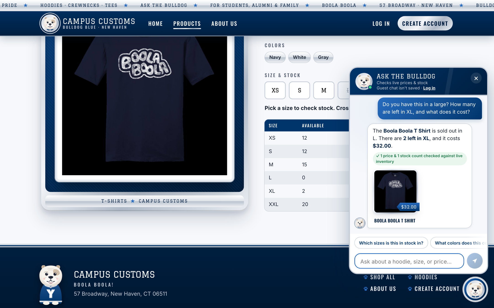
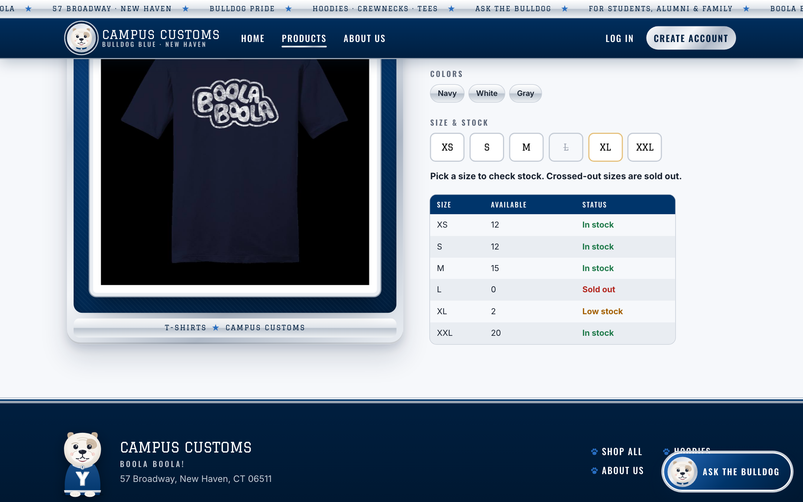
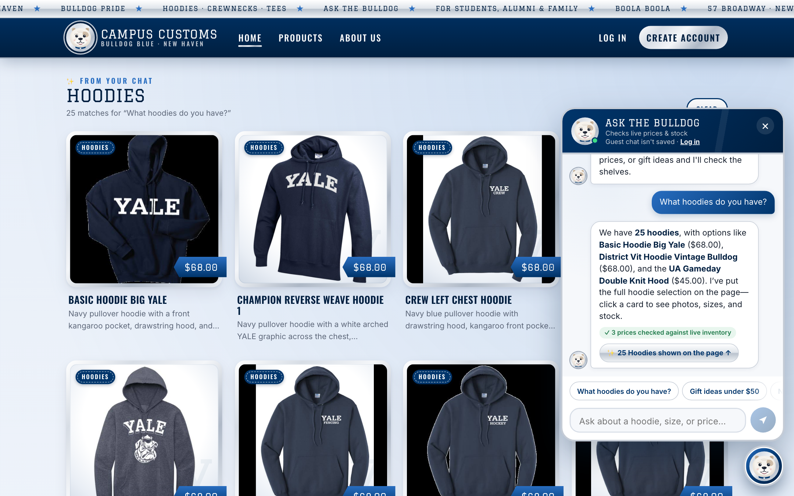
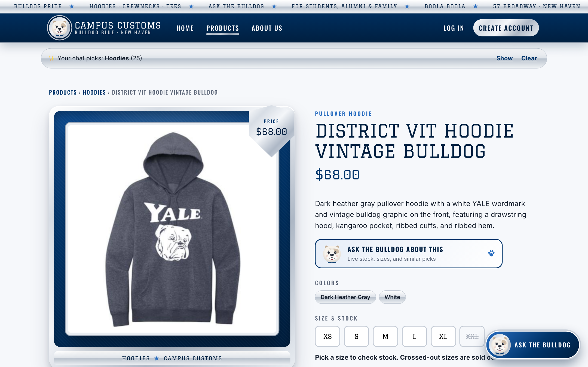
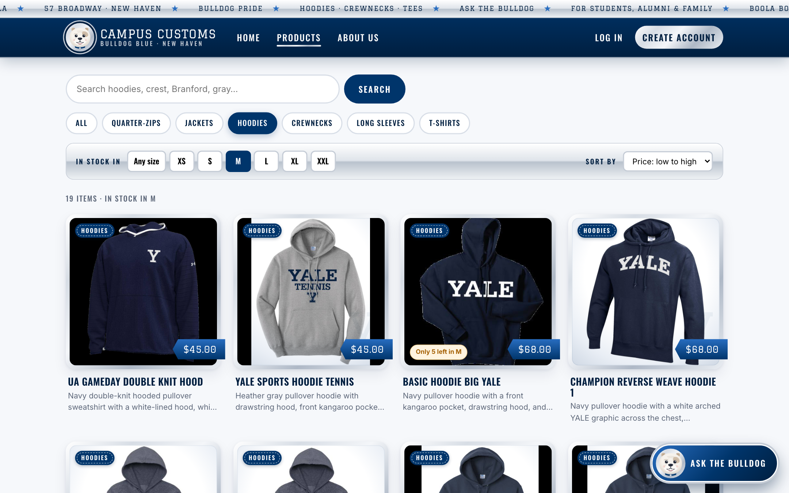

Live site tested at http://127.0.0.1:5173 (React + Vite front end, FastAPI + PydanticAI backend, model GPT-6 Luna).
Tested October 7, 2026. Screenshots are from the running app in Chromium at 1440×900. Every check passed.
Check 1: Chat checks an item's inventory level (honest stock and price)
✓ Pass: chat answer matches the database exactly
On the Boola Boola T Shirt product page, I asked the chat:
"Do you have this in a large? How many are left in XL, and what does it cost?"

What this proves: the bot understood "this" meant the product on screen. It answered
"sold out in L. There are 2 left in XL, and it costs $32.00", which matches the stock table
behind the chat (L = 0, XL = 2). The green "✓ 1 price & 1 stock count checked against live
inventory" badge shows the server verified both numbers against the database before the reply was shown.

Ground truth: the same product page, read straight from the inventory
table: L is sold out (0) and XL is
low stock (2). The chat's answer matches it exactly.
Direct SQLite query of data/campus_customs.db for boola-boola-t-shirt: price
32.0. Stock below.
Size
XS
S
M
L
XL
XXL
Quantity
12
12
15
0
2
20
Check 2: Dynamic search-result cards after a category question
✓ Pass: 25 hoodie cards appeared on the page, and a chat-loaded card opens its detail page
On the Home page, I asked the chat: "What hoodies do you have?"

What this proves: the agent searched the catalogue and returned structured matches. The site
then filled the page with a "✨ From your chat: Hoodies, 25 matches" grid of product cards (image,
name, price, short description), with no page reload. All 25 hoodies in the database appear, not just the
three named in the reply. The chat bubble links back to the grid with "25 Hoodies shown on the page ↑".

What this proves: clicking one of the chat-loaded cards (District Vit Hoodie Vintage
Bulldog) opened the same single-item page built in Problem 3: large image on the left, full description,
price, colors, and sizes on the right (/products/district-vit-hoodie-vintage-bulldog). The
chat results stay available in the "Your chat picks: Hoodies (25)" bar at the top.
Check 3: Usability feature (Problem 9): "In stock in my size" filter, sort, and low-stock badges
✓ Pass: only in-stock items shown, sorted by price, with honest low-stock badges
On the Products page, I picked Hoodies, In stock in: M, and Sort by: Price, low to high.

What this proves: the silver "In stock in" bar hides everything sold out in the chosen size
("19 items · in stock in M", down from 25 hoodies), and the sort puts the $45.00 hoodies first. Cards
close to selling out carry an amber "Only 5 left in M" badge. Six cards on this page have one, from
live inventory counts (5 or fewer). Shoppers only see things they can actually buy in their size.